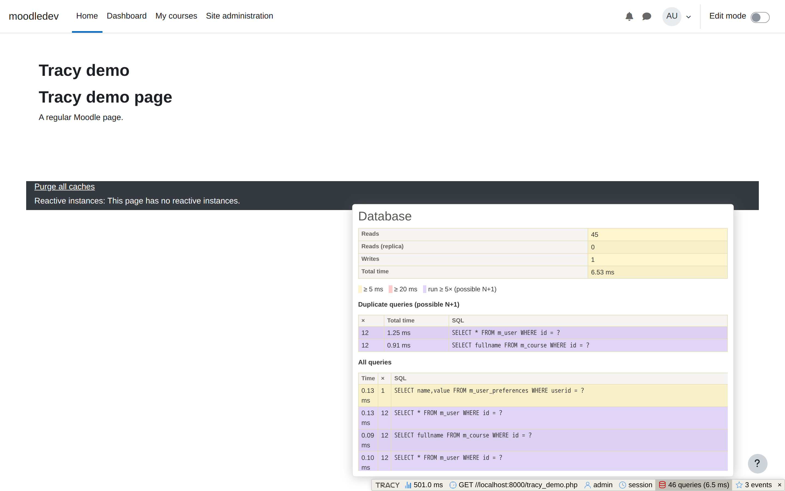
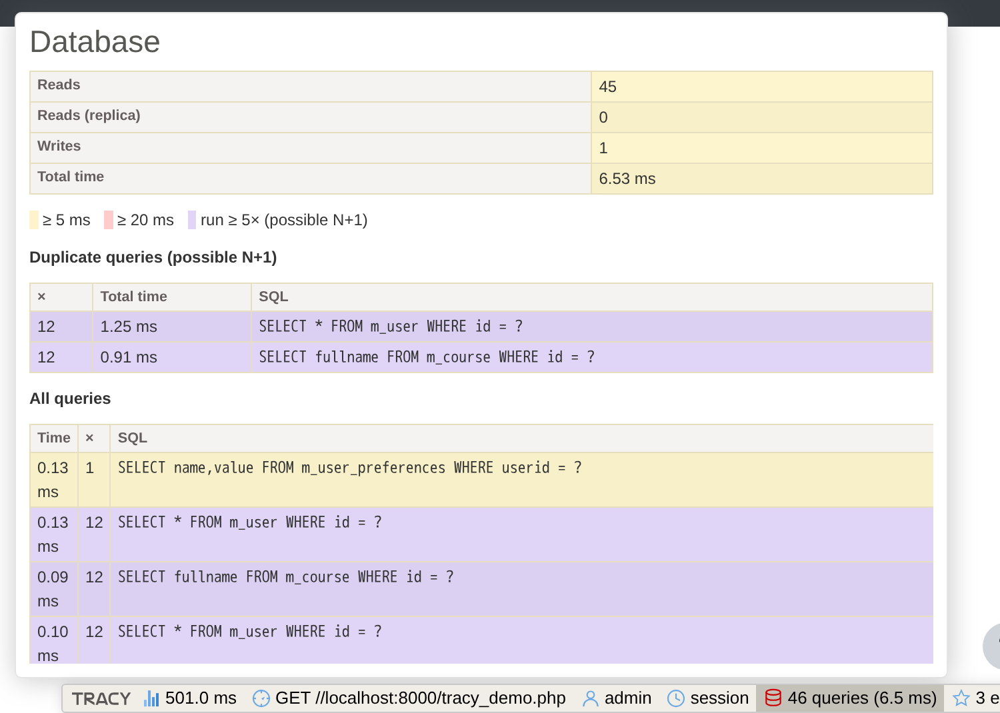
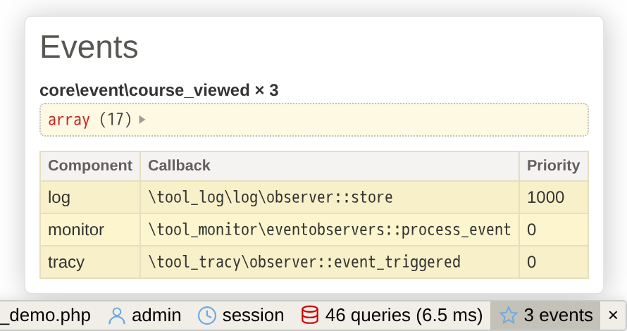
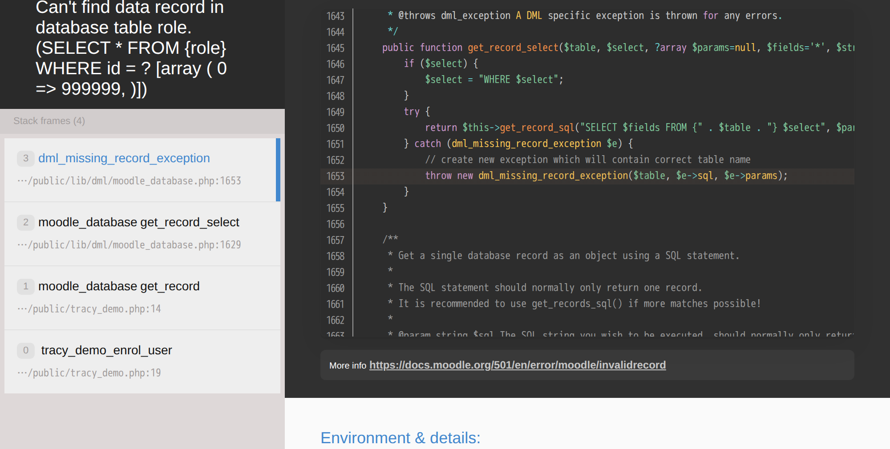
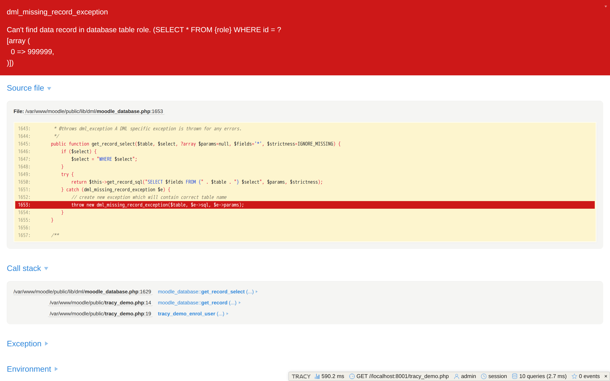

Start with Tracy
See the exception, call stack, queries, routing and events for the whole request. Use that context to find the part of the system worth investigating.
Alpha · Moodle 4.5+
A Tracy debug bar and bluescreen for Moodle developers. Understand the whole request - from a failing call stack to SQL queries and event observers.
Administrators only by default · secrets scrubbed · GPL-3.0-or-later

I spent two years as a junior Nette developer and grew used to Tracy and the developer experience around the Nette ecosystem. When I moved to Moodle development, I missed that visibility: the standard exception pages often did not give me enough context to understand the whole request.
I knew Tracy well, so I first brought its bluescreen into Moodle. Then I started adding Moodle-specific panels for routing, users, sessions, database queries, events and observers. That gradual experiment became tool_tracy.
They solve different parts of the same debugging problem and work well together.
See the exception, call stack, queries, routing and events for the whole request. Use that context to find the part of the system worth investigating.
Set a breakpoint in the suspicious code, step through it and inspect variables as they change. Tracy shortens the path to the right breakpoint; it does not replace Xdebug.
No temporary dumps scattered through the code and no separate log window for the first pass.
The Database panel combines request totals with an optional per-query table. Slow queries are highlighted, and queries repeated five or more times are grouped with their combined runtime.

Inspect which Moodle events fired during the request and which core or third-party observers Moodle would invoke for each event class.

Method, path, page type, layout, context and course, plus scrubbed GET parameters.
A scrubbed dump of the current user with login, guest and administrator flags.
Scrubbed session contents while the raw session ID remains hidden unconditionally.
Moodle's error page provides the essential failure information. Tracy adds expandable arguments and request-level panels when you need to investigate further.


Debug output can expose application internals. The plugin treats that risk as a design constraint.
The standard activation path limits the bar and bluescreen to site administrators by default.
Actual $CFG keys and sensitive-looking values are hidden, including output produced through the protected bdump().
A copied database does not silently carry an active debugger to a different site URL.
Requires Moodle 4.5 or later. Tracy is vendored with the plugin, so Moodle does not need Composer at runtime.
admin/tool/tracy directory.git clone https://github.com/Krejcir6/moodle-tool_tracy.git \
admin/tool/tracygit clone https://github.com/Krejcir6/moodle-tool_tracy.git \
public/admin/tool/tracyAlpha software: review the known limitations before adopting it. The optional per-query list also requires the documented development-only Moodle core patch.
No. Tracy gives you a request-level overview; Xdebug is the stronger tool for breakpoints and line-by-line execution. They complement each other.
Yes. The bluescreen and all standard panels work without a core patch. Only the detailed per-query SQL table needs the optional one-line development patch; aggregate database counters remain available without it.
No. The debug bar only renders on full HTML pages. With the default Error handler ownership setting (Moodle handlers), Moodle's own JSON error responses for AJAX calls stay untouched; switching to Tracy handlers only changes behavior for regular page requests, not AJAX.
It is a development tool and should remain disabled in production. Its defaults and scrubber reduce risk, but any debugger can expose application internals.
Moodle 4.5 or later, with PHP 8.1+ (the vendored Tracy 2.10 supports PHP 8.0-8.4). Moodle 5.1+ moved web-accessible code into a public/ directory, so the plugin and the config.php line go into public/admin/tool/tracy and public/... instead of the classic paths.
Moodle's third-party library policy favors vendored, declared dependencies for plugins. The bundled Tracy version is pinned and documented in thirdpartylibs.xml.